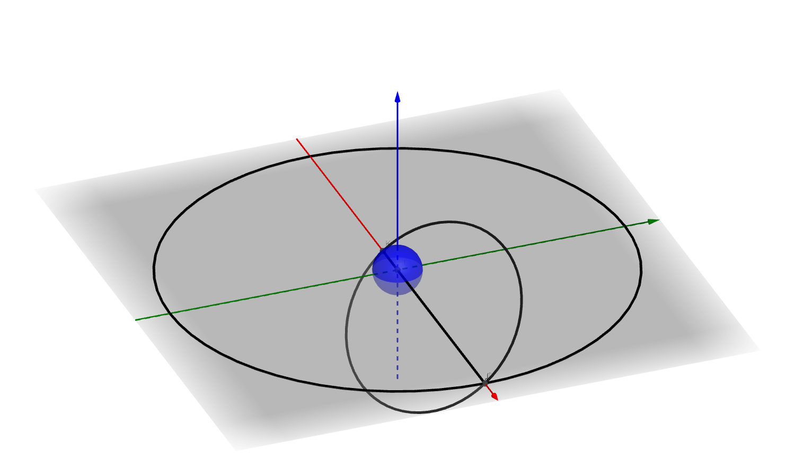

Off-plane transferの補足解説
具体的な手順については、以下の記事を参照してください。
地球―月のOff-plane transfer
Off-plane transferとは何か
自機とターゲットの軌道面が異なるとき※、軌道上の2つの点において両者が交差することになります。
※軌道面が異なる＝LAN（昇交点）とInc（軌道傾斜角）が一致しない
（大ざっぱに言うと、自分と相手の軌道にずれがあるということ）
この交点に自機とターゲットが同時に到達するようにすれば、ランデブーが可能になります。
これをOff-plane transfer※と呼びます。
※ざっくり日本語に訳すと「軌道面の外側での遷移軌道」
重要：Off-plane transferでは、Align planes MFDを使って軌道面を一致させる必要はありません。
地球―月のOff-plane transfer
地球周回軌道→月軌道のOff-plane transferを図で表すと以下のようになります。※
外側の円が月の軌道、細長い楕円が宇宙船の軌道（ホーマン軌道）です。
上（斜め上・真上）から見た場合

横から見た場合
※この図における地球の大きさや月までの距離は、正確なものではありません
高度200kmの地球周回軌道上から月軌道まで宇宙船が移動するには、ホーマン軌道ならおよそ4日かかります。
したがって、「月が4日後に交点に到達するタイミング※」に出発すれば、軌道面を変更せずに月とランデブーできます。
※実際には、遠地点・近地点において、地球から月までの距離と、月の移動速度は変化します。
ただし、極端にDelta Vに余裕のない機体でなければ、これらを厳密に考慮しなくてもあまり問題ありません。
TransXでは、2つの交点（2つの軌道面が交差するところ）は白い線で表示されています。
出発のタイミングが合っていれば、自分の軌道をこの白い線に重ねることで、最小限のDelta Vで月に到達できます。
Off-plane transferのメリット
宇宙での軌道面の変更には、大きなコストが伴います。
現実的な性能の宇宙船では、軌道面の変更に推進剤を使いすぎて目的地に到達できないということも起こります。
打ち上げ地点の緯度によっては、ある角度に向かって打ち上げることでターゲットと軌道面を一致させることも可能ですが、バイコヌールのような高緯度地域ではこれは使えません。
打ち上げ方位（Launch Azimuth）を求める方法
Off-plane transferを使うことで、推進剤に余裕のない機体を高緯度地域から打ち上げる場合でも、月などの目標に到達させることができます。
惑星間航行について
TransXを使って惑星間航行をおこなう場合は、すべてOff-plane transferになります。
IMFDを使えば、より複雑な軌道を設定することも可能です。
具体的には、以下のページを参照してください。
IMFD Target Intercept - OrbiterWiki
ヒント
Quickstartシナリオでゲームを開始して、すぐに90°（真東）を向いて軌道投入すると、そのままOff-plane transferで月に向かえるようになっています。
タイミングの取り方がわからない場合は参考にしてください。